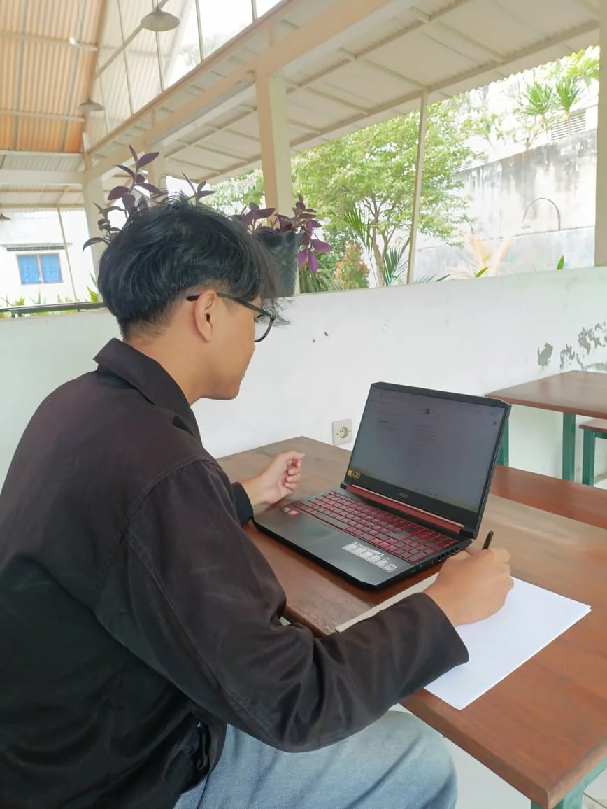
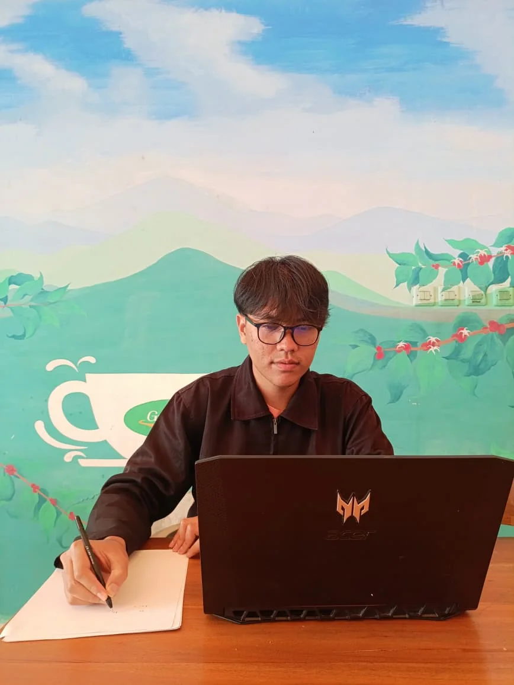
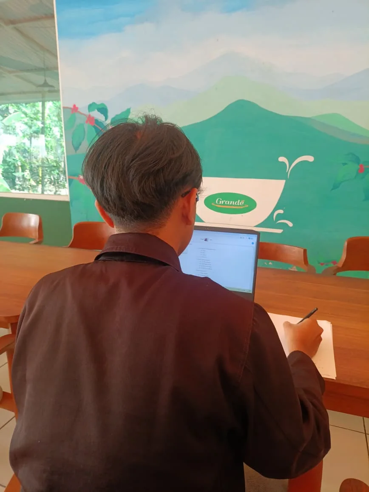

Peraturan
Babak Penyisihan
Peraturan Pengerjaan Soal
- Peserta tidak boleh diwakilkan atau digantikan.
- Peserta yang terlambat mengikuti tes tidak mendapat waktu tambahan.
- Tes Babak Penyisihan LMNas 37 terdiri dari dua bagian. Bagian Pertama terdiri dari 25 soal pilihan ganda, dengan jawaban benar bernilai +4, salah bernilai -1, dan kosong bernilai 0. Bagian Kedua terdiri dari 5 soal isian singkat, dengan jawaban benar bernilai +7, salah bernilai 0, dan kosong bernilai 0.
- Pada soal isian singkat, peserta menuliskan jawaban akhir paling sederhana berupa bilangan bulat tak negatif tanpa tambahan keterangan apa pun. Penulisan bilangan ribuan tidak menggunakan titik. Contoh yang salah: 1.000 koin. Contoh yang benar: 1000 (tanpa titik dan keterangan).
- Dua di antara 25 soal pilihan ganda merupakan soal emas. Nomor soal emas dirahasiakan oleh panitia. Soal emas akan digunakan sebagai bahan pertimbangan ketika terdapat peserta dengan nilai yang sama pada batas kelolosan.
- Waktu pengerjaan tes adalah 120 menit, dimulai dari pukul 09.00 WIB s.d. 11.00 WIB.
- Apabila terdapat nilai yang sama pada batas kelolosan, prioritas pertimbangan kelolosan ke Babak Semifinal adalah:
- Banyak jawaban benar pada isian singkat.
- Banyak jawaban benar pada pilihan ganda.
- Banyak jawaban benar pada soal emas.
- Peserta mengerjakan soal secara mandiri dan jujur, serta dilarang menggunakan buku catatan, kalkulator, atau alat bantu lainnya (kecuali jangka dan penggaris lurus).
- Peserta yang melakukan kecurangan dalam bentuk apa pun akan didiskualifikasi.
- Setelah pengerjaan Babak Penyisihan, peserta wajib mengisi formulir evaluasi yang sekaligus digunakan untuk pengumpulan kertas coretan paling lambat 1 jam setelah keluar dari Zoom Meeting. Peserta yang tidak mengisi formulir tersebut akan didiskualifikasi.
- Kunci jawaban dan pengumuman hasil penyisihan dapat dilihat di situs web LMNas UGM.
- Peserta dapat mengajukan sanggahan terhadap soal maupun kunci jawaban Babak Penyisihan yang dinilai tidak benar dengan penjelasan yang memadai serta mengikuti format sanggahan yang tersedia di situs web LMNas UGM. Pengajuan sanggahan dapat dikirimkan kepada panitia paling lambat 12 jam setelah pengumuman hasil Babak Penyisihan melalui email sanggahanlmnas@gmail.com.
Peraturan Pengawasan
- Peserta mengerjakan soal secara daring melalui platform Zoom.
- Zoom akan terdiri dari beberapa tautan dan masing-masing tautan terdiri dari beberapa breakout room yang dibagi berdasarkan nomor urut peserta.
- Perangkat peserta yang digunakan sebagai kamera harus bergabung ke breakout room dengan format nama: Nomor Peserta_Nama Peserta. Nomor peserta yang digunakan adalah bagian kedua dan ketiga dari keseluruhan nomor peserta.
Contoh: apabila nomor peserta adalah 01-015-0021-1 dan nama peserta adalah David Hilbert, penamaan Zoom-nya adalah 015-0021_David Hilbert.
- Setiap breakout room akan diawasi oleh dua pengawas.
- Setiap peserta menggunakan dua device, satu untuk pengerjaan soal dan satu untuk pengawasan.
- Peserta memosisikan kamera pengawasan sesuai dengan ketentuan yang telah ditetapkan oleh panitia.
Contoh tampilan dan posisi kamera:

Benar 
Salah 
Salah - Peserta wajib menyalakan kamera dan mikrofon selama pengerjaan soal berlangsung.
- Selama pengerjaan soal berlangsung, peserta dilarang:
- berkomunikasi dan bekerja sama dengan orang lain dalam bentuk apa pun;
- meninggalkan tempat pengerjaan;
- keluar dari room Zoom;
- membuka laman lain; dan
- makan (diperbolehkan untuk minum).
- Jika peserta keluar dari Zoom dan tidak ada konfirmasi selama 10 menit, peserta tersebut dinyatakan gugur.